communicability_betweenness_centrality¶
- communicability_betweenness_centrality(G, normalized=True)¶
Return communicability betweenness for all pairs of nodes in G.
Communicability betweenness measure makes use of the number of walks connecting every pair of nodes as the basis of a betweenness centrality measure.
Parameters : G: graph :
Returns : nodes:dictionary :
Dictionary of nodes with communicability betweenness as the value.
Raises : NetworkXError :
If the graph is not undirected and simple.
See also
- communicability
- Communicability between all pairs of nodes in G.
- communicability_centrality
- Communicability centrality for each node of G using matrix exponential.
- communicability_centrality_exp
- Communicability centrality for each node in G using spectral decomposition.
Notes
Let 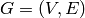 be a simple undirected graph with
 nodes and
nodes and  edges,
and denote the adjacency matrix of
edges,
and denote the adjacency matrix of  .
.Let 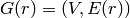 be the graph resulting from removing all edges connected to node but not the node itself.
The adjacency matrix for 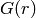 is 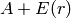, where 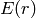 has nonzeros only in row and column .
The communicability betweenness of a node is [R120]
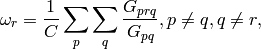
where 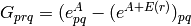 is the number of walks involving node r, 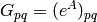 is the number of closed walks starting at node 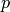 and ending at node 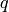, and 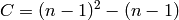 is a normalization factor equal to the number of terms in the sum.
The resulting 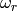 takes values between zero and one. The lower bound cannot be attained for a connected graph, and the upper bound is attained in the star graph.
References
[R120] (1, 2) Ernesto Estrada, Desmond J. Higham, Naomichi Hatano, “Communicability Betweenness in Complex Networks” Physica A 388 (2009) 764-774. http://arxiv.org/abs/0905.4102 Examples
>>> G = nx.Graph([(0,1),(1,2),(1,5),(5,4),(2,4),(2,3),(4,3),(3,6)]) >>> cbc = nx.communicability_betweenness_centrality(G)